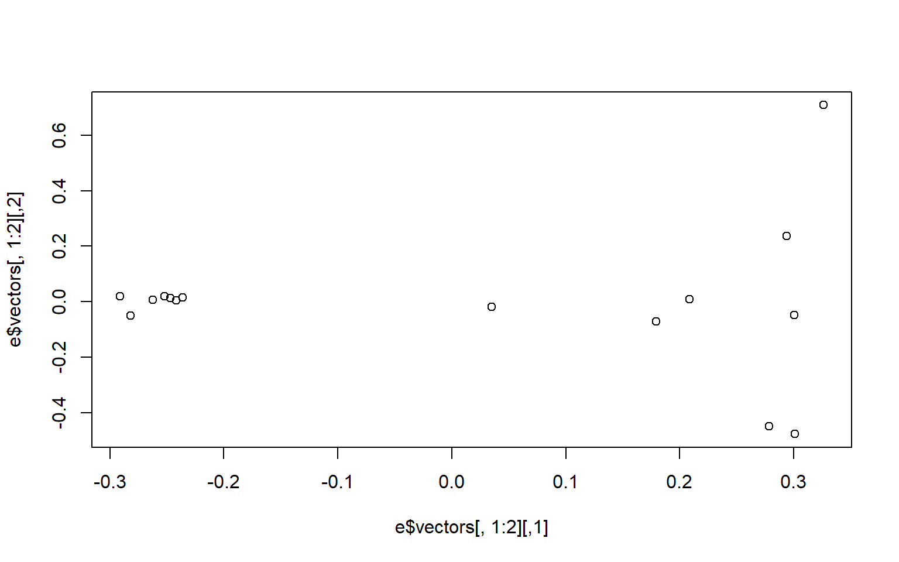

9 Week 8- Principle Component Analyses
The lecture for this week focused on Plotting a PCA can be found here.
In week 5 we mapped reads to a genome so we could call our genetic variants (SNPs) and generated bam files for each read file (= sequence data from an individual). Now that we know how to do some R basics we can use those SNPs to plot patterns of population structure via a principal component analysis.
The first portion of this lesson will be performed in bash and then we will generate the plots in RStudio.
9.1 Download the data
We first need to download the data. Use the link below to download it to jetstream, and then us the tar command to un-compress it.
wget https://raw.githubusercontent.com/BayLab/MarineGenomicsData/main/week8_semester.tar.gz
tar -xzvf week9_semester.tar.gzOur data this week consists of genotype_likelihood files in beagle format and a bam.filelist which contains id information for our samples.
ls -lh MarineGenomicsData/Week89.2 Installing programs
We will also need to install a few programs. The code below installs the program pcangsd, and a few dependencies for pcangsd:
#install pip for python
curl https://bootstrap.pypa.io/get-pip.py -o get-pip.py
python3 get-pip.py
#we need to add our home directory to the path for pip
#look at path
echo $PATH
#add the location of pip to our path
export PATH="$HOME/.local/bin:$PATH"
#then install pcangsd
git clone https://github.com/Rosemeis/pcangsd.git
cd pcangsd/
pip install --user -r requirements.txt #this installs additional requirements for pcangsd
python3 setup.py build_ext --inplaceCheck that it’s installed correctly.
#navigate to your home directory
cd
python3 pcangsd/pcangsd.py -hYou should see the help menu for pcangsd.
9.3 Run pcangsd on our data
python3 ../../pcangsd/pcangsd.py -beagle genolike_beagle.beagle.gz -o pca_out -threads 28This will generate a covariance matrix output file. We can read this file into R and compute the eigenvectors and eigenvalues and make our plot.
9.4 Setting up a new project in R
We’ll first open a new .R script to keep track of our code and everything that we’re doing. Be sure to comment heavily with #. It may seem obvious what we’re doing now, but you will forget what certain lines of code do in a surprisingly short amount of time.
9.5 Reading data into R
There are several ways to read data in R. Useful functions include read.table(), getwd(), and setwd()
R like many other programs is set to start in a specific directory, usually the desktop or home directory. You can check and see what directory R is set in with the command getwd()
And of course all of this code is typed into our script and commented along the way.
#check working directory
#getwd()
#should output
#[1] "/home/margeno"Thus in jetstream the working directory is set to our home directory, which will work fine for uploading data. If you need to change the directory you can use setwd() and provide it with the full directory path (e.g., "C:") and then confirm that it moved the directory with getwd().
In Rstudio you can also use the pull down menus Session to get and set your working directory. Similarly, the tab Files in the lower right will also allow you to set your working directory.
Now well read the data output by angsd into R using read.table() and as.matrix()
cov<-as.matrix(read.table("pca_out.cov"))And then we can compute the eigenvalues from our covariance matrix with the function eigen.
e<-eigen(cov)And make a simple plot in base R
plot(e$vectors[,1:2])
We may be interested in how much of the variance our first two components explain. You can look at this in the e object under values. We divide the eigen values by the sum of all the values to get the percent explained by each value.
e$values/sum(e$values)
#> [1] 0.24278761 0.07662213 0.07502757 0.07349541 0.07287943 0.07034540 0.06674509 0.06530546 0.05280345 0.04958515 0.04274839 0.03706328 0.03527164
#> [14] 0.03241500 0.00690499We now want to make the colors match population labels. The information for which population each individual sample came from is in the bam.filelist file.
#read in the data
names<-read.table("bam.filelist")
#assign the rownames of the covariance matix the
rownames(cov)<-names$V2#remake the plot with the colors we want
plot(e$vectors[,1:2], col=as.factor(rownames(cov)), pch=16)There is another column in the bam.filelist file that will allow us to color the populations based on region. Go ahead and modify your plots to have nice x and y labels that state the percent variance explained by each axis, and that are colored by region. You can also change the pch and any other parameters you would like.
9.6 Exercises
- In R, upload the genotype likelihood maf file (genolike.beagle.maf.gz). Filter the data so that we only use sites for which all 15 individuals have data present (i.e., subsite by the nInd column). How many SNPs does this leave us? How many SNPs did we start with? Hint use the command
read.table(gzfile("path/to/genotypelikelihoodfile/), header=T)to read in the file in R. Dont forget to assign it to an object or R will print the whole thing to the screen.
Solution
# read in the data
#read in genotype likelihood data and filter by all individuals
gen<-read.table(gzfile("genolike_beagle.mafs.gz"), header=T)
#filter by nind == 15
gen_allIND<-gen[gen$nInd==15,]
#find how many SNPs we had in the first dataset
dim(gen)
#> [1] 282950 7
#[1] 282950 7
#how many do we have in the filtered dataset?
dim(gen_allIND)
#> [1] 31905 7
#[1] 31905 7
- Use the filtered file from 01 in pcangsd to recalculate the covarianve matrix and regenerate the pca plot. How does it differ from the one we generated in class?
Hint this will require you to merge the filtered data frame from exercise 1 with the beagle formated dataframe. Use the function
merge(x, y, by = ), second hint, the function merge only works (properly) if the column names are the same. Change the column names to match across the two dataframes where they have the same info.
Solution
## read in the beagle formatted data
beag<-read.table(gzfile("genolike_beagle.beagle.gz"), header=T)
#look at the column names between the two datasets
colnames(gen)
#> [1] "chromo" "position" "major" "minor" "knownEM" "pK.EM" "nInd"
colnames(beag)
#> [1] "marker" "allele1" "allele2" "Ind0" "Ind0.1" "Ind0.2" "Ind1" "Ind1.1" "Ind1.2" "Ind2" "Ind2.1" "Ind2.2" "Ind3" "Ind3.1"
#> [15] "Ind3.2" "Ind4" "Ind4.1" "Ind4.2" "Ind5" "Ind5.1" "Ind5.2" "Ind6" "Ind6.1" "Ind6.2" "Ind7" "Ind7.1" "Ind7.2" "Ind8"
#> [29] "Ind8.1" "Ind8.2" "Ind9" "Ind9.1" "Ind9.2" "Ind10" "Ind10.1" "Ind10.2" "Ind11" "Ind11.1" "Ind11.2" "Ind12" "Ind12.1" "Ind12.2"
#> [43] "Ind13" "Ind13.1" "Ind13.2" "Ind14" "Ind14.1" "Ind14.2"annoyingly the beagle formatted data merges the chromo and position columns of the maf dataframe
two solutions: 1. we could split the columns in beag to match chromo and position 2. we merge the columns in gen to match the format in beag
since we need the beagle format to run pcangsd lets do option 2.
we’ll use the paste() function to to this
we’ll make a new column in gen that is labeled marker to match the beagle column
gen_allIND$marker<-paste(gen_allIND$chromo, gen_allIND$position, sep="_")
#then merge them by the marker column
beag_allIND<-merge(gen_allIND, beag, by="marker")
#that should return a dataframe with 31905 rows and 55 columns
#pcangsd doesn't want those extra columns that came from our merge
#lets get rid of them to leave the 48 columns that beagle needs.
#use colnames to see which ones we want
colnames(beag_allIND)
#> [1] "marker" "chromo" "position" "major" "minor" "knownEM" "pK.EM" "nInd" "allele1" "allele2" "Ind0" "Ind0.1" "Ind0.2"
#> [14] "Ind1" "Ind1.1" "Ind1.2" "Ind2" "Ind2.1" "Ind2.2" "Ind3" "Ind3.1" "Ind3.2" "Ind4" "Ind4.1" "Ind4.2" "Ind5"
#> [27] "Ind5.1" "Ind5.2" "Ind6" "Ind6.1" "Ind6.2" "Ind7" "Ind7.1" "Ind7.2" "Ind8" "Ind8.1" "Ind8.2" "Ind9" "Ind9.1"
#> [40] "Ind9.2" "Ind10" "Ind10.1" "Ind10.2" "Ind11" "Ind11.1" "Ind11.2" "Ind12" "Ind12.1" "Ind12.2" "Ind13" "Ind13.1" "Ind13.2"
#> [53] "Ind14" "Ind14.1" "Ind14.2"
#we want the first column and then columns 9-55
beag_allIND_final<-beag_allIND[,c(1,9:55)]
#now we have a dataframe with 31905 rows and 48 columns
#let's write a table that we can use to run in pcangsd
write.table(beag_allIND_final, "geno_like_filt_allIND.beagle",
sep="\t",
row.names = F)
#by default write.table outputs a dataframe with row names we dont want that
### This writes a file to our Marine Genomics data directory.
# pcangsd needs the file to be gzipped$ gzip geno_like_filt_allIND.beagle
# and now we can run our pcangsd code
$ python3 ../../pcangsd/pcangsd.py -beagle geno_like_filt_allIND.beagle.gz -o pca_out_allind -threads 28and then we can go back to R and rerun our code to calculate the eigenvalues and eigenvectors for this covariance matrix.
#read in the new covariance matrix
cov_allind<-as.matrix(read.table("pca_out_allind.cov"))
#> Warning in file(file, "rt"): cannot open file 'pca_out_allind.cov': No such file or directory
#> Error in file(file, "rt"): cannot open the connection
#calculate eigenvalues
e_allind<-eigen(cov_allind)
#> Error in as.matrix(x): object 'cov_allind' not found#plot the data
plot(e_allind$vectors[,1:2])
#> Error in h(simpleError(msg, call)): error in evaluating the argument 'x' in selecting a method for function 'plot': object 'e_allind' not found
#how much variance does our pc explain
e_allind$values/sum(e_allind$values)
#> Error in eval(expr, envir, enclos): object 'e_allind' not found